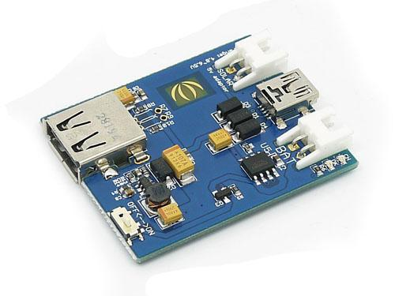
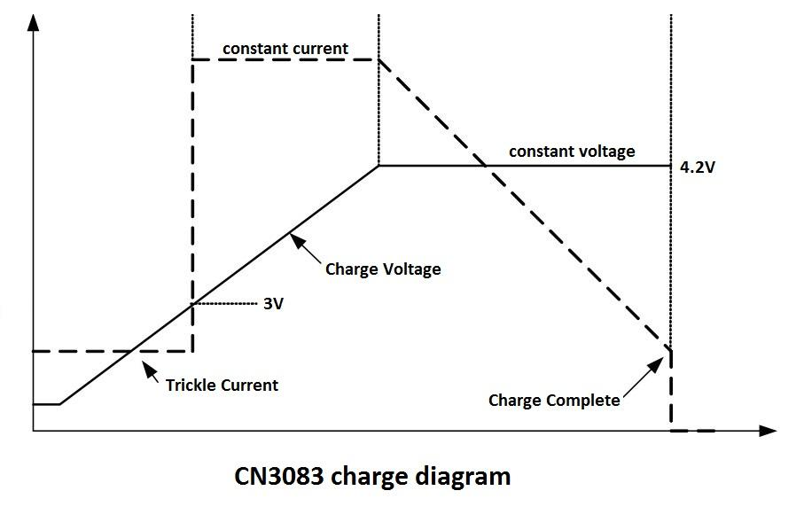
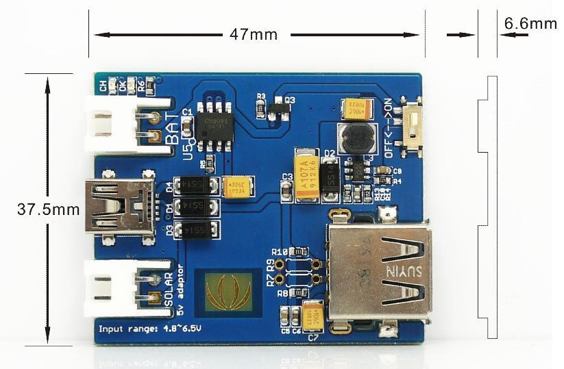
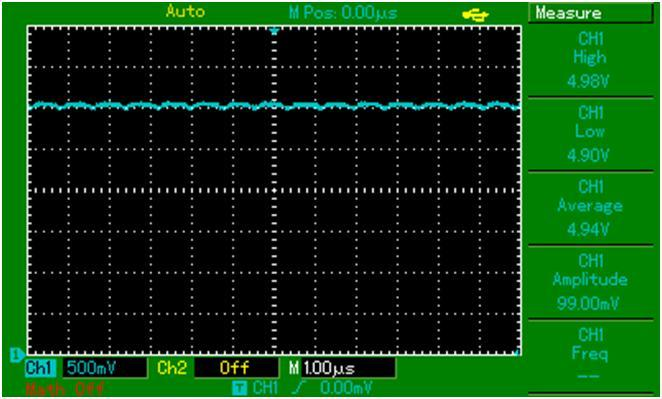
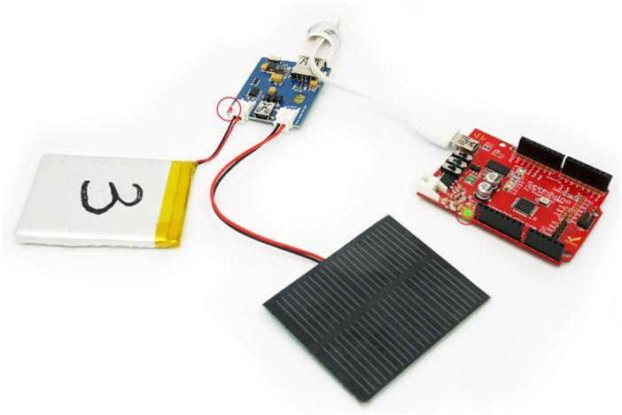

Lipo Rider is a power module with Li-Po battery charge management and boost circuit designed for MCU projects with standard USB output interface.
Model:POW115D2P

The warnings and wrong operations possible cause dangerous.

| Items | Min | Norm | Max |
|---|---|---|---|
| Input Voltage | 4.8V | 5.0V | 6.0V |
| Output Voltage | 4.8V | 5.0V | 5.2V |
| Output Current | 300mA | ||
| Operate Temperature | -20℃~65℃ | ||
| Storage Temperature | -25℃~85℃ | ||
| Items | Min | Norm | Max |
|---|---|---|---|
| Charger IC | CN3083 | ||
| Charger input voltage | 4.8V | 5.0V | 6.0V |
| Charger input current | 5mA | 400mA | - |
| Sleep mode | - | - | 3uA |
| Items | Min | Norm | Max |
|---|---|---|---|
| Boost IC | AIC1896 | ||
| Output voltage | 4.8V | 5.0V | 5.2V |
| Output current | 5mA | 100mA | 350mA |
| CH pin level(Red LED state) | OK pin level(Green LED state) | Statements |
|---|---|---|
| low level(on) | high level(off) | Charging |
| high level(off) | low level(last on) | Complete |
| pulse signal(flash) | pulse signal(on) | The battery isn't exist |
| high level(off) | high level(off) | Two situations :
|
The outline dimensions are 47mm * 37.5mm * 6.6mm as shown below:

The Lipo Rider works as a power module to supply a stable 5VDC power for MCU projects. Here is an example to drive 300mA output wave for a power supply:

Lipo Rider provides a reliable solution to charge a Li-Po battery from solar or USB power and output a boosted 5VDC power to the standard USB port. When the mini USB power socket is connected, it will charge the Li-Po battery and disable the boost circuit so that the mini USB power is directly output to the standard USB socket. When the solar JST power socket is connected, it will charge the Li-Po battery and boost the Li-Po battery power to the standard USB port.
This is the hardware setup example for the Lipo Rider. When you put the setup under illumination, the solar panel collects the luminous energy and charges the Li-Po battery, Lipo Rider boosts the Li-Po battery power to 5v for Seeeduino or other microcontroller project. The switch is on and the lit LEDs marked by red circle show that the Lipo Rider is working.

Includes important code snippet. Demo code like :
Demo code { }
The projects and application examples.
All the components used to produce the product.
Please list your question here:
If you have questions or other better design ideas, you can go to our forum or wish to discuss.
| Revision | Descriptions | Date | Editor |
|---|---|---|---|
| Lipo Rider V0.9b | Initial public release | Nov 2, 2010 | Lafier |
| Lipo Rider V1.2 | Revise release | Jan 11, 2011 | Silas Wan |
Bug Tracker is the place you can publish any bugs you think you might have found during use. Please write down what you have to say, your answers will help us improve our products.
The Additional Idea is the place to write your project ideas about this product, or other usages you've found. Or you can write them on Projects page.
The resources need to be downloaded, like Eagle file, Demo code, project or other datasheet.
Click here to buy Lipo Rider ,or other products you like.
Other related products and resources.
This documentation is licensed under the Creative Commons Attribution-ShareAlike License 3.0 Source code and libraries are licensed under GPL/LGPL, see source code files for details.
Links to external webpages which provide more application ideas, documents/datasheet or software libraries
Copyright (c) 2008-2016 Seeed Development Limited (www.seeedstudio.com / www.seeed.cc)